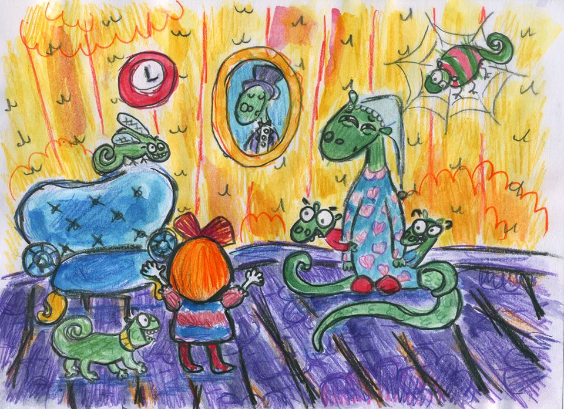

Олечка вернулась домой, швырнула сумку в угол и без сил упала на диван.
— А теперь я провалюсь в пучину сна! — воодушевленно произнесла Олечка и закрыла глаза.
И как только закрыла глаза, огромный диван вместе с Олечкой провалился в неизвестную дыру.
Олечка успела сказать:
— Ой!
Но испугаться не успела, потому что падение длилось не дольше секунды. Олечка еще раз сказала «ой», когда поняла что сидит на диване, но уже не в своей квартире. А где сидит?
— Непонятно, — сказала Олечка.
Вокруг темно и веет прохладой. Скорее всего она провалилась до самого подвала. Тоненький испуганный голосок в темноте спросил:
— Мама, что это?
Голосок повзрослее ответил:
— Что-то упало сверху.
— А оно живое?
— Надо включить свет и посмотреть.
Когда зажегся свет, Олечка увидела что перед ней стоит ящерка в пижаме. Настоящая ящерка, но не такая маленькая, какие бегают по траве. Но и не такая большая, чтобы Олечка могла испугаться. И пижама на ящерке была настоящей. Мордочка у ящерки была зеленая и заспанная. А пижама розовая и в клеточку. А из под ящерки в пижаме испуганно выглядывали две ящерки поменьше.
— Мама, что это?
— Мама, я боюсь!
Малыши заплакали, но ящерка-мама успокоила их:
— Сейчас придёт папа и все выяснит.
Олечка испугалась, что ее сейчас будут ругать. Хотя она не понимала кто это и за что ее можно ругать. Она же сидит на своем диване.
Вошел ящерка-папа, и он оказался совсем не страшный (а Олечка подумала, что папой будет дракон). Ящерка-папа был чуть побольше остальных ящерок и не в пижаме, а в пиджаке и в очках. Он удивленно посмотрел на девочку, подошел к дивану и аккуратно потрогал обивку.
— Непонятно, — сказал ящерка-папа, — это же диван!
Следом за ящеркой-папой в комнату вбежал ящерка-пес. Он был таким же как и остальные ящерки, только с ошейником и очень-очень юркий. Ящерка-пес не стал задавать никаких вопросов, а сразу запрыгнул на диван и стал облизывать Олечку.
Олечка с ним сразу подружилась и погладила по голове. Маленькому ящерке-псу очень понравилось, и он еще сильнее стал облизывать девочку. А язык у него был жесткий и шершавый. Олечке стало щекотно и она громко рассмеялась.
— Смотрите, она совсем не опасное! — закричали остальные ящерки.
И детишки тут же бросились к дивану. Они стали трогать Олечку за коленки, дергать за волосы и еще больше щекотать.
— Прекратите! Прекратите меня щекотать! — сквозь смех выговорила Олечка.
Но ящерки не унимались:
— Она разговаривает!
— Она теплая!
— Она красивая!
— Она рыжая!
И только когда ящерка-папа сказал детям и собаке отойти, Олечку наконец оставили в покое.
Матильда оказалась взрослая рыжая ящерка-девушка. По всей видимости — старшая дочь в семье.
— Это твоя рыжая подруга? — спросил папа.
— Нет, не моя — ответила ящерка-девушка, — может это дедушкина подруга?
В комнату вошли ящерка-дедушка и ящерка-бабушка. У них была такая же зеленая кожа, как у всей семьи, но менее гладкая и вся в морщинках. Ящерка-дедушка только мельком взглянул на гостью и тут же сел в кресло читать газету. А ящерка-бабушка, наоборот, даже не глядя на Олечку побежала на кухню разогревать ужин.
Когда ящерка-папа увидел, что Олечку никто не боится, он сказал:
— Так и быть, диван и эта рыжая останутся у нас жить.
— Ура! — закричали ящерки-дети.
— Как мило, — улыбнулась рыжая ящерка-дочка.
— Я принесу простыни, — сказала ящерка-мама.
— Цены на бобы упали в два раза, — сказал дедушка читая газету.
А ящерка-пес ничего не сказал. Он сидел на коленях у Олечки и обоим это нравилось.
А ящерка-паук, тихо сидевший в своей паутине, хотел было что-то сказать, но услышал жужжание. Это глупая жирная ящерка-муха пролетала мимо.
Так и получилось, что Олечка осталась жить в семье ящерок.

После ужина, вся семья решила, что Олечка будет спать в комнате рыжей ящерки Матильды.
А Матильда сказала, что каждую ночь из камина появляется привидение. Поэтому Олечка долго не могла закрыть глаза и все время смотрела на камин. Как только часы пробили полночь, в камине кто-то чихнул и оттуда вылетело привидение. Это было очень красивое ящерка-привидение. Оно было полупрозрачным и светилось лунным светом. И совсем не страшное.
Олечка натянула одеяло на голову и оставила себе маленькую щелочку, чтобы наблюдать за привидением. Ящерка-привидение перелетело комнату и подлетело к стене, на которой висели часы. Оно поцеловало стену и улетело обратно в камин. Олечка вскочила с кровати и подбежала к стене, которую поцеловало ящерка-привидение. А там еле заметная щель. Олечка расковыряла ее и в появившейся нише обнаружила сережки. Очень красивые сережки в форме маленьких золотых ящерок. Олечка зажала их в кулак и легла обратно спать.
Проснулась Олечка от того, что кто-то плюхнулся ей на живот. Открыла глаза и увидела, что это ящерка-пес. Все утро он гонялся за жирной ящеркой-мухой летавшей по комнате. Забирался на комод, дожидался пока цель пролетит мимо и прыгал в ее сторону с открытой пастью. Ящерка-муха была жирной, но очень верткой, и ящерке-псу никак не удавалось ее поймать. Вместо этого он разбудил весь дом, прыгая по кроватям.
Олечка раскрыла кулак. Ей казалось, что ящерка-привидение из камина это всего-лишь сон, но на ладони лежали те самые сережки. В виде маленьких золотых ящерок.
За завтраком Олечка показала сережки всем ящеркам и ящерка-бабушка очень удивилась:
— Когда я была маленькой девочкой, моя бабушка рассказывала мне историю про юную леди-ящерку жившую в этом доме. Ящерка-леди была влюблена в молодого ящерку-графа. И любовь эта была взаимной. Ящерка-граф подарил своей возлюбленной прекрасные золотые сережки, и вскоре должна была состоятся их свадьба. Но у них ничего не получилось, потому что это грусная история.
Олечка ожидала продолжения, но ящерка-бабушка закончила рассказ. Девочка не успела высказать свое возмущение по этому поводу, как в комнату вошел ящерка-пожарный в блестящей каске.
— Доброе утро! На улице стоит чудесная погода! — сказал ящерка-пожарный.
А рыжая ящерка Матильда засветилась нежным изумрудно-зеленым цветом от смущения. Понятно было, что она влюблена в молодого пожарного.
Ящерка-мама сказала:
— Пойдемте гулять все вместе.
И никто ей не возражал.
Ящерка-пес обрадовался больше всех.
Ящерка-бабушка сказала, что она не пойдет гулять и останется мыть посуду.
Ящерка-муха уминала остатки завтрака и становилась еще жирнее.
Ящерка-паук сидел в углу и плёл самую хитрую в мире паутину.
— Это будет мировая паутина, — приговаривал ящерка-паук. — Это будет world wide web!
После завтрака ящерки и Олечка пошли гулять по городу. Город ящерок был точно такой же как город Олечки, только под землей. И по улицам вместо людей гуляли ящерки: ящерки-бизнесмены, ящерки-мамы с колясками, ящерки-эмо, ящерки-дворники и ящерки-воришки. Окна блестели от подземного солнца, а магазины сверкали разноцветными вывесками.
Прямо перед домом был городской парк. Ящерки-детишки мигом перебежали дорогу и нашли в траве ящерку-ящерку.
— Мы будем гулять в парке, — сказала ящерка-мама.
— Я пойду в бильярд-клуб, — сказал ящерка-дедушка.
— А мы пойдем в кафе-мороженое, — сказал ящерка-пожарный и взял в одну лапу Матильду, а другую протянул Олечке.
Кафе называлось «Все самое вкусное». Обе ящерки и Олечка сели за маленький столик и подозвали ящерку-официанта.
— Дайте нам всё самое вкусное!, — сказала Олечка.
— У нас всё самое вкусное, — возразил ящерка-официант.
— А что у вас самое вкусное?, — спросила Олечка.
— Всё, — ответил ящерка-официант.
Олечка взяла молочный коктейль за пять ящерко-долларов, Матильда взяла шоколадный чизкейк, а ящерка-пожарный взял какао.
Когда все съели и выпили, Олечка тоже захотела шоколадный чизкейк, Матильда тоже захотела какао, а ящерка-пожарный захотел молочный коктейль.
Когда опять все съели и выпили, Олечка захотела попробовать какао, а ящерка-пожарный захотел шоколадный чизкейк. Матильда захотела молочный коктейль, но не стала его заказывать:
— Я боюсь что стану толстой, — сказала она.
— Тебя это только сделает еще прекраснее, — сказал ящерка-пожарный, и Матильда опять смущенно позеленела.
Когда опять все съели и выпили, Олечка захотела еще что-нибудь попробовать, а олечкин живот захотел лопнуть.
Матильда сказала:
— Теперь можно вернуться в парк.
Олечка сказала:
— Я буду валяться на траве.
Олечкин живот сказал:
— Уррр!
На краю парка они встретили плачущих ящерок-детей. Одних, без родителей.
— Что случилось?, — испуганно спросила Матильда. — Где мама и папа?
— У-у-у, — плакали ящерки-дети, — их забра-а-али!
Даже ящерка-пес, который всегда радовался, сидел рядом и скулил.
Даже дедушка, который прибежал из бильярд-клуба, сидел на скамейке схватившись за голову.
Даже ящерка-ящерка, которой наконец-то выдался удобный момент сбежать от детских лап, сидела рядом с грустной мордочкой.
— Кто забрал? Куда забрал? — спросила Матильда.
Ящерки-дети продолжали плакать и протянули старшей сестре мамин сапог. В сапоге оказалась записка адресованная Матильде:
«Делай что хочешь, живи как знаешь. Но закончи учебу, начни работать и заработай миллион евро. Тогда мы вернем тебе твоих родителей. С любовью, мафия.»
Олечка удивилась:
— Ничего себе!
Ящерка-дедушка изумился:
— Ну и дела!
Ящерка-Матильда разозлилась:
— Я им хвосты поотрываю!
Ящерка-пожарный подпрыгнул:
— Надо немедленно принять меры!
И все остальные согласились с ящеркой-пожарным и тоже подпрыгнули. А когда приземлились, то очень сильно задумались — никто не знал, что надо делать.
Самым последним перестал прыгать ящерка-пес. И тут Олечка придумала:
— Я придумала!
Все ящерки посмотрели на Олечку.
— У нас есть сапог!, — сказала Олечка.
— Лучше бы у нас была мама, а мафия забрала сапог, — сказала Матильда.
— У нас есть сапог и ящерка-пес!, — сказала Олечка.
Все ящерки сразу поняли что придумала Олечка. А больше всех понял ящерка-пес. Он тщательно обнюхал сапог и побежал по улице, и все остальные побежали за ним следом.
Через два квартала ящерка-пес остановился около магазина с вывеской «Обувь из Италии. На все сапоги — скидка 50%!»
Из магазина вышел толстый ящерка-продавец:
— Синьоры и сеньориты! Изящные сапоги! Крепкие сапоги! Модные сапоги! Старомодные сапоги! Не проходите мимо нашего магазина! Итальянское качество! Скидки до пятидесяти процентов! Белые сапоги! Черные сапоги! Желтые сапоги!
— Глупая собака, — сказала Матильда, — вместо того, чтобы искать маму она привела нас в обувной магазин.
Все остальные молчали.
— Мне нельзя терять время, — сказала Матильда, — мне надо закончить учебу и заработать миллион евро.
Никто не успел сказать ни единого слова, как рыжая ящерка Матильда села в автобус и уехала в университет.
— Мне надо ей помочь, — сказал ящерка-пожарный и захотел сесть на следующий автобус.
— Подожди, не уезжай, — сказал ящерка-дедушка.
Ящерка-дедушка начал что-то подозревать.
Ящерка-пожарный начал что-то подозревать.
Олечка начала что-то подозревать.
Ящерка-пес начал дуться на то, что его обозвали глупой собакой.
— Давайте проверим этот подозрительный магазин, — сказал ящерка-дедушка.
— А как мы проверим?, — спросила Олечка.
— Надо залезть через окно, — сказал ящерка-дедушка.
Они обошли магазин, но все окна были закрыты. Была открыта только маленькая форточка, через которую пролезть мог только ящерка-пес. Все стали уговаривать ящерку-пса залезть в форточку и проверить подозрительный магазин. Но ящерка-пес сидел и дулся. Он никуда не собирался больше лезть. Никогда!
— Не беда, — сказал ящерка-дедушка, — у меня есть очень-очень маленькая видеокамера.
И достал из кармана крохотную видеокамеру, величиной со спичечную головку.
— Мы знаем, кто нам поможет!, — хором закричали ящерки-дети. Они уже давно перестали плакать и теперь тоже думали как спасти родителей, совсем как взрослые.
— Мы сейчас вернемся, — сказали ящерки-дети и убежали.
Ящерка-паук сидел в укромном углу и наблюдал как жирная ящерка-муха летала вокруг ниточки, на которой висела капелька варенья.
Ящерка-паук знал, что как только жирная ящерка-муха сядет на ниточку, ниточка дернет веревочку. Веревочка включит вентилятор. Вентилятор сдует с полки модель парусника. Парусник толкнет дедушкин сувенирный бильярдный шар. Бильярдный шар упадет на мамин свадебный хрусталь. Хрусталь со звоном разобьется. Бабушка услышит звук разбитого стекла и войдет в комнату через дверь. Дверь откроется и толкнет ниточку, на которой будет сидеть жирная ящерка-муха и кушать варенье. Ниточка качнется прямо в паутину. Муха запутается. Ящерка-паук будет тут как тут.
Жирная ящерка-муха летала вокруг ниточки и не собиралась садиться. Открылась дверь и в комнату вбежали ящерки-дети. Они мигом поймали муху, посадили ее в банку и убежали.
Ящерка-паук сидел в укромном углу и кусал локти.
Ящерки-дети вернулись к обувному магазину, взяли у ящерки-дедушки маленькую видеокамеру, приклеили ее к мушиному брюшку и запустили жирную ящерку-муху в форточку.
— А сейчас мы все увидим, — сказал ящерка-дедушка и достал маленький экран.
Все ящерки и Олечка смотрели в экран, а экран показывал:
В первой комнате:
Сапоги.
Еще сапоги.
Полные полки сапогов.
Толстого ящерку-продавца.
Во второй комнате:
Пистолеты.
Еще пистолеты.
Целый арсенал оружия.
Толстого ящерку-гангстера.
В третьей комнате:
Сигары.
Еще сигары.
Склад коробок с контробандными сигарами.
Толстого ящерку-босса мафии.
И наконец на маленьком экране все увидели ящерку-папу и ящерку-маму в одном сапоге.
— Ура, мама! Ура, папа!, — закричали ящерки-дети.
А ящерка-дедушка спросил:
— Как же мы вытащим их оттуда?
А ящерка-пожарный ответил:
— Мой друг работает в полиции. Он нам поможет.
Ящерка-пожарный привел ящерку-инспектора, тот посмотрел на экран и сказал:
— Сапоги это не нарушение. Оружие, контробанда и заложники это нарушение. Сейчас я зайду в магазин и арестую их всех.
Но хитрый толстый ящерка-продавец закрыл магазин и повесил табличку «Закрыто на обед. Приходите в среду.»
Ящерка-дедушка сказал:
— Мы не можем ждать до среды.
Ящерка-инспектор сказал:
— Я не могу ломать дверь, это нарушение.
Олечка сказала:
— Я не знаю что надо делать.
Ящерка-пожарный сказал:
— Я знаю, что надо делать. Ведь я пожарный!
Он наклонился к ящеркам-детям и протянул им спичечный коробок:
— Спички детям не игрушки, поэтому держите.
Дети схватили коробок и моментально устроили пожар.
— Я пожарный, — закричал ящерка-пожарный, — откройте двери.
Толстый ящерка-продавец открыл двери, а все этого только и ждали. Ящерка-пожарный погасил огонь. Ящерка-инспектор схватил одной лапой толстого ящерку-гангстера, второй лапой толстого ящерку-босса мафии, а хвостом схватил толстого ящерку-продавца.
Ящерка-мама и ящерка-папа увидели что их спасли и бросились всех обнимать и целовать.
Расцеловали ящерок-детей.
Расцеловали Олечку.
Расцеловали ящерку-дедушку.
Расцеловали ящерку-пожарного.
Расцеловали ящерку-пса так крепко, что тот перестал дуться.
Расцеловали ящерку-инспектора так крепко, что тот чуть было не выпустил похитителей.
— А где же моя старшая дочка?, — спросила ящерка-мама.
В магазин вбежала рыжая ящерка-Матильда:
— Мама, папа! Я получила диплом и заработала миллион евро! Я спасу вас!
— Мы уже спасены, — сказала ящерка-мама и расцеловала дочку.
После того, как все объятия и поцелуи закончились, Матильда повернулась к ящеркам-мафиози и сказала:
— Я вам хвосты поотрываю!
Ящерка-инспектор сказал:
— Не надо, я их арестую.
Ящерка-мама сказала:
— Не надо никого арестовывать и не надо никому хвосты отрывать.
Все удивились.
Ящерка-мама сказала:
— Мы сами попросили их похитить нас. Мы хотели чтобы наша дочка как можно скорее закончила университет и вышла замуж.
— И чтобы заработала миллион евро, — добавил ящерка-папа.
Все рассмеялись.
А ящерка-инспектор отпустил ящерок-мафиози.
А жирная ящерка-муха обнюхала контробандные сигары и решила остаться жить в обувном магазине.
А толстые ящерки-мафиози увидели что муха достаточно жирная и приняли ее в семью.
А ящерка-дедушка подарил им экран и рассказал как он работает с видеокамерой на мушином брюшке.
— Теперь мы достаточно нагулялись, — сказала ящерка-мама. — Пойдемте все вместе обедать у нас дома.
— Я не смогу, — сказал ящерка-инспектор. — Меня ждут настоящие преступники.
— Мы не сможем, — сказал ящерка-босс мафии. — Нас ждут настоящие преступления.
За обедом все рассказывали ящерке-бабушке про приключения.
А Матильда подошла к ящерке-пожарному и шепнула на ушко:
— Спасибо, что помог спасти моих родителей.
А ящерка-пожарный шепнул Матильде на ушко:
— Теперь ты станешь моей ящеркой-женой?
Матильда нисколько не засмущалась, поцеловала ящерку-пожарного и сказала:
— Да.
А ящерка-дедушка вошел в комнату и сказал:
— Ваш диван собирается в путь.
— Значит мне пора домой, — сказала Олечка и села на диван.
Ящерка-пес подбежал и облизал Олечку на прощание.
Ящерка-мама подошла и поцеловала Олечку в темечко.
Ящерка-папа подошел и пожал Олечке руку.
Ящерки-дети подбежали и обрызгали Олечку из водяных пистолетов.
Ящерка-бабушка подошла и всунула Олечке остатки обеда в коробочке.
Ящерка-дедушка подошел и сказал, чтобы поторапливались, потому что диван ждать не будет.
Матильда побдежала к Олечке и обняла ее крепко-крепко.
Ящерка-паук с большим чемоданом забрался на диван и сел на краешек.
— В этом доме мне больше делать нечего, — сказал ящерка-паук.
Глава 2: Олечка и тайна золотых сережек
Однажды, обычная девушка Олечка попала в страну ящерок. Там она подружилась с рыжей ящеркой Матильдой и помогла спасти ее родителей. С тех пор прошло уже несколько месяцев. Все это время Олечка и Матильда переписывались по электронной почте и рассказывали друг-дружке о своей жизни.
До знакомства с ящерками Олечка не знала как можно написать электронное письмо ящеркам. А все оказалось очень просто:
Чтобы написать письмо собаке, надо в почтовом адресе поставить символ @, который называется «собака»;
чтобы написать письмо человеку, тоже надо ставить «собаку», потому что собака — друг человека;
а чтобы написать письмо ящерке, надо ставить «ящерку».
На обычной клавиатуре такого символа нет. Но перед возвращением домой из страны ящерок, дедушка Матильды подарил Олечке специальную клавиатуру для ящерок. Клавиши были не очень удобными — потому что ящерки нажимают их не пальцами, как люди, а лапками. Они это делают очень быстро и ловко, как будто барабанят зажигательные ритмы на барабане-джамбо. А Олечка печатала на такой клавиатуре очень медленно.
— Я к у п и л а н о в о е п л а т ь е, — диктовала вслух Олечка.
И устала печатать. А ведь она хотела спросить не собирается ли Матильда выйти замуж за молодого красавца-пожарного. И не придумал ли ящерка-дедушка способа как Олечке еще раз попасть в страну ящерок. И если ящерка-дедушка нашел дорогу, а свадьба вот-вот состоится, то Олечка приедет на нее именно в прекрасном новом платье.
— Нет, такое длинное письмо я три года буду писать, — сказала Олечка и отправила письмо как есть.
Вместе с Олечкой из страны ящерок приехал ящерка-паук. На родине ему было не комильфо, и теперь он поселился в укромном уголке олечкиной квартиры и ловил мух.
Иногда ящерка-паук выходил из своего уголка и садился на клавиатуру.
И тогда Олечка печатала испуганное письмо:
— Поогите!!!! Пук идит н оей клитуре и не дёт печтть букы!!!! Что делть?
А ящерка-паук печатал:
— ваавммссваамвсвавмсв
Помимо ящерки-паука Олечка привезла из страны ящерок маленькие золотые сережки в форме ящерок. Эти сережки Олечке помогло найти ящерка-привидение, а ящерка-бабушка рассказала красивую но грустную легенду о ящерке-леди и ящерке-графе, который подарил своей возлюбленной золотые сережки.
В четверг вечером Олечка познакомилась со знатным кавалером.
Знатный кавалер сказал:
— Пойдемте на свидание.
Олечка спросила:
— В кафе-мороженое?
Знатный кавалер ответил:
— С кафе-мороженого все только начнется.
Олечка сказала:
— Я зайду домой и переоденусь.
Олечка зашла домой и переоделась. А когда переоделась подошла к зеркалу и надела золотые сережки в форме ящерок. А когда надела сержки, отошла от зеркала и...
Незнакомый голос сказал:
— Как же долго я ждал тебя, моя любовь!
Голос был незнакомый.
Голос был страшный.
Голос принадлежал огромному ящерке-монстру в серебрянных доспехах и с длинным мечом на поясе.
Ящерка-монстр сказал:
— Теперь ничто не в силах разлучить нас. Теперь мы...
Ящерка-монстр перестал говорить и посмотрел на Олечку.
— Непонятно, — сказал ящерка-монстр, — что это такое?
Олечка не могла говорить. Она только что вышла из своей ванны, и оказалась в каменном зале незнакомого замка. Перед Олечкой стоял страшный ящерка-монстр и смотрел на нее.
Олечка обрадовалась, потому что она снова была в стране ящерок.
Олечка испугалась, потому что было страшно.
Олечка не могла говорить, потому что обрадовалась и испугалась одновременно.
Ящерка-монстр сказал:
— Ты чудовище. Ты украло мою Пенелопу и явилось насмехаться надо мной.
Ящерка-монстр вытащил меч и подошел к Олечке.
— Я съем тебя!, — закричал ящерка-монстр и открыл пасть, чтобы откусить Олечке голову.
— Ваше сиятельство, не ешьте!, — закричал ящерка в костюме дворецкого.
Ящерка-дворецкий вбежал в каменный зал и размахивал большим полотенцем, чтобы остановить своего хозяина.
Ящерка-монстр остановился и не стал откусывать Олечке голову.
Ящерка-дворецкий подбежал к Олечке, потрогал олечкин лоб, понюхал волосы и облизал олечкину руку.
— Ваше сиятельство, — сказал ящерка-дворецкий ящерке-монстру, — оно не мытое и сырое.
— Тогда помой и приготовь, — сказал ящерка-монстр, и засунул меч в ножны.
Ящерка-дворецкий обернул Олечку полотенцем, взял в лапы, отнес в маленькую комнату, поставил на пол и ушел.
Когда щелкнул дверной замок, Олечка смогла говорить.
Олечка сказала:
— А-а-а-а-а-а-а-а-а-а-а!
Когда Олечка престала кричать, она осмотрелась. Это была маленькая комната с каменными стенами. Из малюсенького окошка сквозь решетку виднелось розовое небо страны ящерок. Не было ни скамеек, ни кровати, ни стола. Только большая железная дверь.
Олечка постелила полотенце на пол и села.
Замок еще раз щелкнул и вошел ящерка-дворецкий с большим мешком соли.
Поставил его на пол и принес мешок молотого перца.
Поставил его на пол и принес охапку лавровых листьев.
Бросил их на пол перед Олечкой и сказал:
— Сиди и готовься.
— К чему готовиться?, — спросила Олечка.
— Еда никогда не спрашивала к чему она готовится, — ответил ящерка-дворецкий.
— Я не Еда, — сказала Олечка. — Я Олечка.
— Когда станешь Мягкой — позови, — сказал ящерка-дворецкий и ушел.
Олечка сидела час.
Потом сидела еще час.
— Может быть я уже готова?, — подумала Олечка.
— Как можно меня есть?
— Как я сюда попала без своего дивана?
— Что это за замок?
— Вкусная ли я?
— Где справедливость?
— У меня уже мозги кипят, от всех этих вопросов, — сказала Олечка вслух.
И тут Олечка сообразила, что на кипящих мозгах она приготовится за считанные минуты. Ее посадят на большое блюдо и съедят с кетчупом.
— Надо подумать о чем-то другом, — сказала Олечка. — Например, об этой жирной ящерке-мухе.
— Вззз, — сказала ящерка-муха.
— Апчхи, — сказала ящерка-муха, пролетая мимо мешка с перцем.
И улетела в окошко.
— Тебе хорошо, — сказала Олечка. — Тебе хватает маленького окошка. А мне нужен выход побольше.
После этих слов, прогремел большой взрыв и рядом с окошком образовался выход побольше. Когда Олечка вскочила на ноги, а пыль, наоборот, улеглась, через выход вошли три толстые ящерки и жирная ящерка-муха.
— Ой, а я вас знаю, — обрадовалась Олечка, — вы ящерки-мафиози!
Это действительно были толстые ящерки-мафиози, которые несколько месяцев назад похитили родителей Матильды — олечкиной ящерки-подружки. Но поскольку в той истории родители сами попросили их похитить, то Олечка совсем не злилась на ящерок-мафиози и обрадовалась их появлению.
Ящерка-босс мафии повернулся к Олечке и сказал:
— Мы действительно ящерки-мафиози, которые несколько месяцев назад похитили родителей Матильды. Но поскольку родители сами просили их похитить, то зла на нас никто не держит.
Ящерка-босс мафии приподнял шляпу и сказал:
— Меня зовут Роберто, это мои братья Джилберто и Умберто. А это ящерка-муха Вжик.
— Вжик? Как в мультике?, — Олечка вспомнила любимый мультик, в котором была муха по имени Вжик.
— Как моментально! Вжик, чик и готово, — ответил ящерка-босс мафии.
Потому что настоящие боссы мафии никогда не смотрят мультиков, и не знают никакую другую муху по имени Вжик.
— Мне надо отсюда выбраться, — сказала Олечка. — Иначе меня съедят.
— Тебе надо отсюда выбраться, — сказал ящерка-босс мафии Роберто. — Для этого мы пришли.
— Это окошко слишком маленькое, — сказал Джилберто. — Тебе через него не выбраться.
— Тебе надо попасть в ванную комнату, — сказал Умберто. — Там окошко побольше.
И показал лапой в дыру в стене, через которую вошли ящерки-мафиози. Там виднелась стена замка а в ней окошко, через которое могла бы пролезть Олечка.
— А почему мне не выйти через эту дыру в стене?, — спросила Олечка.
Толстый ящерка-босс мафии посмотрел на дыру, посмотрел на Олечку и сказал:
— Ты слишком тощая. Только мы сможем выбраться через эту дыру.
— И это было бы слишком просто, — сказал толстый ящерка Джилберто.
— И ты не должна пользоваться услугами мафии, — сказал толстый ящерка Умберто.
Толстые ящерки-мафиози приподняли шляпы, прощаясь с Олечкой. После чего вышли в дыру и заделали ее обратно. Когда у них кончился цемент, они воспользовались мешком с солью.
Жирная ящерка-муха вылетела через окно.
Олечка сняла босоножки и замоталась полотенцем, так чтобы из под полотенца не выглядывало платье.
— Эй!, — крикнула она железной двери.
— Скрип, — сказала железная дверь.
— Ты уже готова?, — спросил вошедший ящерка-дворецкий.
— Я немытая, — сказала Олечка.
— Тогда я отведу тебя в ванную, — сказал ящерка-дворецкий.
И отвел Олечку в ванную комнату.
Когда Олечка выбралась через окошко и спустилась по стене замка, она увидела куст.
Из кустов выбежал ящерка-пес.
— Ящерка-пес!, — обрадовалась Олечка.
Ящерка-пес обрадовался Олечке. И принялся ее облизывать.
Из кустов выбещали ящерки-дети.
— Ящерки-дети!, — обрадовалась Олечка.
Ящерки-дети обрадовались Олечке и принялись трогать ее волосы.
Из кустов вышли ящерка-мама и ящерка-папа.
— Ящерка-мама и ящерка-папа!, — обрадовалась Олечка.
Ящерка-мама и ящерка-папа обрадовались Олечке и принялись оттаскивать от нее детей.
Из кустов вышли ящерка-дедушка и ящерка-бабушка.
— Ящерка-дедушка и ящерка-бабушка!, — обрадовалась Олечка.
Ящерка-дедушка и ящерка-бабушка обрадовались Олечке и протянули ей свежую газету со свежими булочками.
Из кустов вышла рыжая ящерка Матильда.
Олечка сказала:
— А-а-а!
Матильда сказала:
— А-а-а!
И обе девушки принялись обниматься.
— Как вы все здесь очутились?, — спросила Олечка.
— Мы приехали на автобусе, — ответила Матильда.
— На автобусе?
— На автобусе.
Из кустов выехал ящерка-автобус. Он выглядел точно так-же как городские автобусы в Олечкином городе, только был ящеркой. И ему не требовался водитель. Ящерка-автобус сам рулил, сам открывал двери пассажирам и сам обедал на заправочной станции.
Пока автобус обедал на заправочной станции, Олечка и ящерки обедали на закусочной станции.
А там уже сидели ящерки-мафиози и обсуждали свои темные дела.
— Здравствуйте, ящерки-мафиози, — сказала Олечка.
— Здравствуй, Олечка, — сказали ящерки-мафиози. — Мы видим, что ты успешно выбралась из замка.
Олечка и ящерки сели за соседний столик и к ним подошла ящерка-официантка:
— У нас есть гамбургеры, чизбургеры, пельменьбургеры, шоколадбургеры и молочный коктейль.
Ящерки-дети сказали:
— Мы будем сто шоколадбургеров!
Ящерка-мама сказала:
— Я буду минус девяностовосемь шоколадбургеров и вегетарианский салат.
Олечка сказала:
— Я буду два чизбургера и молочный коктейль.
Ящерка-официантка сказала:
— Нет, вы не будете.
— Почему?
— Потому что вы босиком, а у нас приличное заведение.
— Но я оставила босоножки в замке ящерки-монстра!
— Хоть в битве под Ватерлоо.
Олечка и ящерки разозлились на ящерку-официантку и уже собирались позвать ящерку-менеджера. Но с соседнего столика подошел Умберто и подарил Олечке изящные сапожки, потому что он владел обувным магазином.
Все заказали все что хотели, а ящерка-бабушка заказала все что было.
— Какой ужас!, — сказала ящерка-бабушка, после того как разложила очередной бургер на составные части.
Пока ящерка-бабушка препарировала бургеры, а все остальные их кушали, подъехала пожарная машина и к столику присоединились ящерка-пожарный вместе с ящеркой-инспектором.
— Кушать Олечек не нарушение, — сказал ящерка-инспектор.
Все удивились.
— Конечно, мы все осуждаем такой поступок, — объяснил ящерка-инспектор, — но нет такого закона, который запрещает кушать Олечек.
— Какой ужас, — сказала ящерка-мама. — Сделай же хоть что-нибудь!
И ящерка-мама посмотрела на ящерку-папу.
Ящерка-папа молча выкинул недоеденный гамбургер, взял чемодан и уехал в столицу, чтобы поговорить с правительством. Через два часа у ящерки-инспектора запищал пейджер.
— Он всегда пищит, когда издаются новые законы, — объяснил ящерка-инспектор.
— Кушать Олечку это серьезное нарушение, — сказал он, когда прочитал сообщение.
— А как мы туда попадем, — спросила Олечка. — Там глубокие рвы и крепкие стены.
— Мы доедем туда на автобусе, — сказала Матильда.
Когда Олечка и ящерки сели в ящерку-автобус, ящерка-автобус сказал:
— Следующая остановка — каминный зал.
Когда Олечка и ящерки вышли из ящерки-автобуса, они оказались в большом каминном зале. Том самом, где ящерка-монстр в первый раз захотел съесть Олечку. Он и сейчас стоял в этом зале и увидев Олечку, снова захотел ее съесть.
— Ты уже готова?, — спросил ящерка-монстр доставая свой меч.
— Она никогда не будет готова, — ответил ящерка-пожарный и заслонил собою Олечку, Матильду и остальных ящерок.
Ящерка-монстр посмотрел на ящерку пожарного и удивился.
Олечка посмотрела на ящерку-пожарного и удивился.
Матильда посмотрела на ящерку-пожарного и удивилась.
Ящерка-пес посмотрел на ящерку-пожарного и так удивился, что начал лаять.
По дороге в замок Ящерка-пожарный одел на голову медный, отполированный до блеска, пожарный шлем. На тело ящерка-пожарный одел защитный костюм из плотной ткани. На нижние лапы ящерка-пожарный одел кирзовые сапоги со шпорами. А в верхних лапах он держал кроваво-красный пожарный топор.
Ящерка-монстр показал на Олечку и сказал:
— Это чудовище украло мою невесту, я съем ее.
Ящерка-бабушка спросила:
— Может быть котлеты по киевски с отварной картошкой и укропом будут лучшим выбором?
Ящерка-монстр ответил:
— Нет.
Ящерка-бабушка спросила:
— А гороховый суп с гренками и пармезаном?
Ящерка-монстр ответил:
— Нет.
Ящерка-бабушка хотела спросить:
— А...?
Но ящерка-монстр ответил:
— Нет.
— Тогда я отрублю тебе голову, — сказал ящерка-пожарный и поднял топор.
— Тогда я отрублю голову тебе и твоей бабушке, — сказал ящерка-монстр и поднял меч.
— Тогда я принимаю два к одному на пожарного, — сказал Умберто.
— Тогда я ставлю триста ящерко-долларов на большого, — сказал Джилберто.
— Не надо ни на кого ставить, не надо никому отрубать голову, — сказало ящерка-привидение.
Все остановились и посмотрели на ящерку-привидение. Никто не знал откуда оно появилось.
— Пенелопа!, — закричал ящерка-монстр. — Любовь моя!
— Эдгар!, — сказало ящерка-привидение. — Любовь моя!
И ящерка-монстр схватил ящерку-приведение в свои объятия.
— Вы ящерка-граф и ящерка-леди из древней легенды?, — догадалась Олечка.
— Да, я ящерка-граф, — ответил ящерка-монстр, когда закончил целовать свою возлюбленную.
— Да, я ящерка-леди, — ответило ящерка-привидение, когда ее возлюбленный закончил ее целовать.
Ящерка-граф сказал:
— Мы полюбили друг-друга много лет назад. Времена были темные и мне пришлось отрубить головы тысяче других поклонников прекрасной ящерки-леди. Но когда последняя непокорная горова слетела с плеч, все было готово к свадьбе. Я на славу отгулял мальчишник с моими верными друзьями, одел свои лучшие доспехи и отправил к невесте гонца с волшебными золотыми сережками. Золотые сережки должны были в одно мгновение принести мою любимую в мой замок. Я стоял и ждал.
Ящерка-леди сказала:
— Я не знала.
Ящерка граф повторил:
— Я стоял и ждал.
Ящерка-леди схватилась за голову лапами и сказала:
— Я думала, что за мной приедет карета, а сережки собиралась одеть в наше свадебное путешествие.
Ящерка-граф сказал:
— Потому что женщины всегда думают глупости.
Ящерка-леди сказала:
— Я не дождалась кареты и умерла от неизвестности. Но я не могла покинуть этот мир не попрощавшись со своим любимым, поэтому я стала привидением.
Ящерка граф сказал:
— Я стоял и ждал.
Все задумались над тем, почему ящерка-граф не умер от неизвестности и не превратился в привидение.
— Виноват, ваше сиятельство, — сказал ящерка-дворецкий, — когда на мальчишнике закончилось вино, мне пришлось подать к столу эликсир бессмертия.
— Как хорошо, что твои верные друзья так много пьют, — сказала ящерка-леди и еще сильнее прижалась к ящерке-графу.
В честь возвращения любимой, ящерка-граф устроил большой пир в своем замке. Он пригласил всех ящерок, Олечку и всех своих верных друзей, чтобы отметить великое событие.
Ящерка-дворецкий не успевал подносить к столу еду и напитки и пригласил на праздник ящерку-официантку из закусочной станции.
Ящерки-мафиози не успели завершить свои темные дела и пригласили на праздник ящерок-жертв.
Ящерки-верные друзья графа все успели, потому что они были бессмертны, как и ящерка-граф. Поэтому они безмятежно сидели за столом, и рассказывали о своих бевых подвигах.
— И выходим мы против тысячи врагов, — говорили ящерки-верные друзья графа.
— И освободили мы одинадцать принцесс, по одной на каждого, — говорили ящерки-верные друзья графа.
— И решили мы не убивать ящерку-тролля, а приручить его, — говорили ящерки-верные друзья графа.
Все за столом внимательно слушали ящерок-верных друзей графа, и удивлялись каждой истории.
— А почему ты так красиво одета?, — спросила Матильда у Олечки, потому что Олечка была красиво одета.
— Я собиралась пойти на свидание со знатным кавалером, — сказала Олечка.
— Знатным?, — спросил ящерка-граф.
— Знатным, — ответила Олечка.
— Знатным это хорошо, — сказал ящерка-граф.
— Без чинов и титулов тоже неплохо, — сказала Матильда и обняла ящерку-пожарного.
— Без титула нет чести, — сердито сказал ящерка-граф и выхватил меч.
Ящерка-граф подошел к ящерке-пожарному и сказал:
— Ты молод и горяч. Ты храбр и отважен. Ты не побоялся вызвать на бой непобедимого ящерку-графа. Я посвящаю тебя в рыцари.
И ящерка-граф посвятил ящерку-пожарного в рыцари.
— Плюс один!, — закричали ящерки-верные друзья графа и продолжили веселиться.
— А твой знатный кавалер хороший?, — спросила Матильда у Олечки.
— Поживем увидим, — ответила Олечка. — Ой, я совсем забыла, что он ждет меня у подьезда.
— Тогда тебе надо возвращаться домой, — сказала Матильда.
— А как это сделать?, — спросила Олечка.
— Сережки отдай, — ответил ящерка-граф.
Ящерки-дети услышали, что Олечка собирается уходить и бросились трогать ее волосы на прощание.
Ящерка-мама услышала, что Олечка собирается уходить и попросила в следующий раз привести модный журнал.
Ящерка-автобус услышал, что Олечка собирается уходить и сказал:
— Уезжать всегда лучше, чем уходить.
Ящерка-пес услышал, что Олечка собирается уходить и ухом не повел. Он точно знал, что Олечка еще вернется.
— Ты готова?, — спросил ящерка-граф.
— Да, готова, — ответила Олечка.
— Теперь я тебя съем, — сказал ящерка-граф.
— Прекрати, — сказала ящерка-леди. — Ты же видишь, что она не готова. Ее кожа совершенно розовая.
Олечка сняла золотые сережки и отдала их ящерке-леди. И сказала:
— Они ваши. Простите, что я одолжила их на время.
Потом Олечка повернулась к Матильде и спросила:
— А как вы узнали, что я была в замке и что меня хотели съесть?, — спросила Олечка у Матильды.
Но Матильды рядом не было. И других ящерок рядом не было. И замка не было. Олечка стояла в своем доме у зеркала.
— Ну вот, — сказала Олечка, — я никогда не узнаю ответа.
А потом она зашла в комнату, где стоял компьютер, и увидела что на мониторе мигает сообщение:
— Письмо Матильде отправлено.
Олечка удивилась:
— Какое письмо Матильде отправлено?
Компьютер сказал:
— Я в беде, помогите мне. Я надела золотые сережки и оказалась в замке ящерки-графа. Он думает, что я украла его любимую и собирается съесть меня. Если вы не поможете, он съест меня. И до конца своей бесконечной жизни будет думать, что я украла его любимую.
— Непонятно, — сказала Олечка. — Я не писала такое письмо.
Ящерка-паук сидел в укромном углу и играл в нинтендо.
Глава 3: Олечка и временной парадокс
Олечка была бы обычной девушкой, если бы целых два раза не попадала в чудесную страну ящерок.
В первый раз Олечка рассправилась с коварной мафией, а во второй раз Олечка одолела злого ящерку-монстра.
— Что будет в следующий раз? — говорила Олечка сама себе каждый вечер.
— Может быть мне встретятся ящерки-зомби?
И перед Олечкой возник ящерка-зомби с переломанными лапками, разбитым глазом и высунутым языком. Он смешно ковылял вдоль дивана и шипел:
— Можги! Свежие можжги!
— Интересно, — спросила Олечка сама себя, — а ящерка-зомби кушает человеческие мозги?
Ящерка-зомби поморщился и сказал:
— Фу, глупости! Я не кушаю человеческие можги!
И исчез.
Олечка продолжила гадать:
— А может быть я встречу ящерок-пиратов или ящерок-инопланетян? Ящерки-роботы? Ящерки майя? Возможно, я встречу ящерку-фокусника-фантазера, и он придумает кого я встречу!
Ящерка-фокусник-фантазер улыбнулся Олечке, снял шляпу и сказал:
— Але оп! Внимание!
За его спиной десяток ящерок-барабанщиков заиграли дробь.
Ящерка-фокусник-фантазер продолжал:
— Вперррвые на арррене!
Олечка замерла в ожидании.
— Ящерррка-гиппопотааам!
Ящерка-гиппопотам появился из шляпы, сделал Олечке книксен и убежал на кухню.
Ящерка-фокусник-фантазер поклонился Олечке и убежал на кухню.
Десяток ящерок-барабанщиков отбарабанили Олечке и убежали на кухню.
Все истории с ящерками Олечка публиковала в своем блоге в интернете. У блога было целых десять читателей со всего мира, с которыми Олечка обсуждала свои путешествия. И все вместе гадали о том, что случится дальше.
Один из главных вопросов, который волновал общество, это как еще раз попасть в страну ящерок?
В своем первом путешествии, Олечка присела на диван и очутилась в доме ящерки Матильды. Но с тех пор сколько Олечка не садилась на диван, тот лишь жалобно скрипел.
Во второй раз, Олечка попала в страну ящерок при помощи волшебных сережек. Но в том же путешествии возвратила сережки законной владелице — доброй ящерке-приведению.
А третьего раза не было. Три года уже прошло.
— Сколько уже можно ждать?! — спрашивала Олечка в своем блоге.
— Обещанного три года ждут, — говорила Кейт86 из Новой Зеландии.
— Так уже прошло три года! — говорила Олечка.
— Ровно три года? — спрашивал Алекс_Бамбадор из Испании.
— Два года и триста шестьдесят четыре дня, — отвечала Олечка.
— Значит надо еще день подождать, — говорил Ящерка-Хакер, который не указал откуда он.
И все читатели блога удивились, поскольку никогда раньше не видели никого с именем Ящерка-Хакер. И он оказался одинадцатым читателем.
— Точно-точно? — спросила Кейт86 у Ящерки-Хакера.
— В одинадцать одинадцать, — сказал Ящерка-Хакер и пропал.
На следующий день в одинадцать часов все читатели блога сидели у своих компьютеров и ждали удивительного происшествия.
— Я думаю, кто-то пошутил и ничего не будет, — писал Алекс_Бамбадор из Испании.
— Но надежда всегда остается, — писала Бесстрашный_Мотылек из Армении.
— У нас уже поздно и я пойду спать, — писал Феликс_1234 из Канады.
— Тук-тук, — написал Ящерка-Хакер ровно в одинадцать часов и одинадцать минут.
Олечка сидела дома и писала письмо ящерке Матильде. От Матильды давно уже не было вестей, и Олечка очень переживала, не случилась ли беда. Письмо еще не было отправлено, а в дверь постучали.
— Это сосед, — догадалась Олечка и открыла двери.
— Это я, — сказала ящерка Матильда через открытую дверь.
— Ура!, — закричала Олечка и обняла подружку.
Когда объятия закончились, ящерка Матильда сказала:
— На самом деле я не совсем я.
Олечка не поняла:
— Не поняла?
Ящерка Матильда сказала:
— Я Матильда, но не та Матильда которую ты знаешь. Я — Матильда из будущего!
Олечка еще больше не поняла:
— Я еще больше не поняла!???
Тогда Матильда сказала:
— Нет времени объяснять, но запомни: сейчас к тебе прийду я — Матильда из твоего времени — и скажу, что надо обязательно бежать и помогать дедушке. Но ты никуда не беги, иначе случится беда.
Олечка ничего не поняла так сильно, что даже не смогла сказать, что она не поняла.
— То что я сказала, — это очень важно, — сказала ящерка Матильда из будущего. — Я спрячусь в шкафу, иначе будет временной парадокс.
И спряталась в шкафу.
И сразу на пороге оказалась ящерка Матильда. Дверь уже была открыта, поэтому Матильда не стучала, а сразу заговорила:
— Нет времени объяснять, но я не та Матильда которую ты знаешь. И не та Матильда из будущего, которая только-что приходила к тебе. Я Матильда из далекого будущего и должна тебе сказать что-то важное.
Олечка не поняла.
Ящерка Матильда из далекого будущего продолжала:
— Я к тебе только что приходила и сказала, что я к тебе сейчас прийду и позову на помощь. Но я ошибалась, когда говорила тебе никуда не ходить! Обязательно иди вместе со мной помогать дедушке! Времени нет, мне надо спрятаться, чтобы не получился временной парадокс.
И едва она забралась под диван, как на пороге появилась третья ящерка Матильда.
— Я Матильда из очень далекого будущего. Совсем нет времени, запомни — я ошибалась, когда думала что ошибалась!
И не останавливаясь, ящерка Матильда из очень далекого будущего пробежала мимо Олечки на кухню.
Это всё.
Зиновий Липинский
Таллинн, 2011